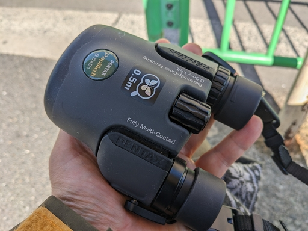
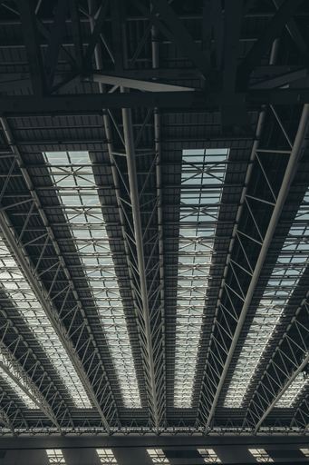
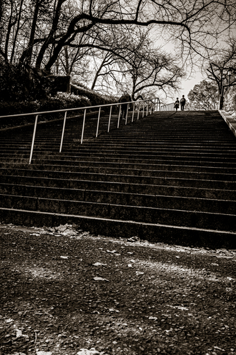
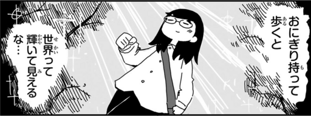

日本野鳥の会大阪支部から「はじめよう！バードウォッチング」という Subject でビギナー向け探鳥会への参加のお誘いメールが来たので申し込んで参加してきた。

なお今回は写真機を持たず上の双眼鏡と図鑑だけ持って出かけたので鳥の写真はない。
集合場所に向かうために最寄りのバス停に座っているとすぐ近くの茂みのスズメたちが喧しく、少し離れた梢にヒヨドリが凛と佇んていた。

環状線に乗り換えるためにホームでボーッとしていたところなんだか久しぶりに大阪駅の天井がいい感じだったのでとりあえずスマホのシャッターを押す。

JR の森ノ宮駅を出て交差点を渡り、集合場所である大阪城公園の噴水付近まで歩く道中、いい感じの階段を見つけた。これも思わずスマホのシャッターを押してしまう。
ドバトが群れいて、ヒヨドリやいろんな野鳥の声がする。が、ほとんどの野鳥は姿は見せてくれない。衆人環視のなかに平気で姿を見せるのはドバトとハシブトガラス、ハシボソカラス、スズメくらいだ。
集合場所近くのローソンでおにぎりとお茶を買う。おにぎり持って歩くと世界って輝いて見えるな……

集合時間まであまり時間がないので噴水の縁に腰掛けて急いでおにぎりを食し、集合場所へ。日本野鳥の会の人の立っている場所に行ったところ、他の参加者の人はすべて来ていたようだった。
午後 13 時 30 分になって日本野鳥の会のレンジャーによる今日の予定とガイダンスが始まる。時間にして 10 分もなかったかもしれない。
その後双眼鏡のセッティングや使い方の説明を受けた後、レンジャーの人が 20m ほど離れた木の枝にぶら下げておいたドナルドダックのぬいぐるみと、その横 10m ほどの茂みに置いた真っ青のティディベアを双眼鏡で視界に入れる練習をし、次に実際に木に留まっている鳥などを見る練習をする。
そしてすぐそばの堀に向かう。
堀の水面にはざっと見ただけでヒドリガモ、オオバン、アオサギ、カワウといった近所での常連が見られる。
カモたちの群れに向かって近所では見られないキンクロハジロを隊長とする別の群れが突進してくる。よく見るとキンクロハジロは集団では行動していないみたい。キンクロハジロに従ってついていっているのはヒドリガモのメスの集団だったりする。
その他にユリカモメ、対岸の木々の枝にヒヨドリ、対岸の地面ではツグミが何かつついて食べていたりする。キジバトの群れがやってきては再び飛び去る。
また気がついたのだけれどオオバンはカモたちと異なり、首を前後に動かしながら泳ぐ。オオバンの足に水かきがないことと何か関係あるのかもしれないが、実際のところはどうなのかわからない。
フィールドスコープにアオサギとカワウが入ったので希望者はどうぞ見てください、とレンジャーの人が言うので覗かせていただく。50m 以上離れた堀の向こうのアオサギとカワウがかなり解像していて瞳の色まではっきりとわかる。
口径 50mm 程度のスコープでも充分解像するし、そこまで暗くはない。Nikon 製と KOWA 製だったがどちらも悪くない。コストパフォーマンスで言えば KOWA に軍配があがるかも。
終了時刻が近づいてきた頃、上空で円を描きながら飛んでいる野鳥がいる。シルエット的にカラスではなく猛禽類っぽい。レンジャーの人に尋ねてみるとハイタカではないか、とのこと。
ハイタカは弧を描きながら上昇気流に乗って上昇するとの説明。しかしハシブトガラスがハイタカにモビングして、ハイタカは上昇気流に乗れずに木々の向こうに。
と思ったらハシブトガラスを振り払ってすぐに戻ってきたハイタカが上昇気流に乗ってあっというまに高いところに。
このような上昇気流に乗るタカ類があつまってタカ柱を作る名所が日本にはあるらしく、秋山さんのとりライフというマンガにも描かれている。
野鳥を見ているうちにあっという間に時間は過ぎ、探鳥会も終了に。
最後にレンジャーの人から日本野鳥の会の紹介があって、鳥インフル対策として靴のソール、自分のようにストックをついている人間はストックの先端も消毒して解散となった。
もう少し明るくて見やすい双眼鏡が欲しくなったので、大阪駅で途中下車してヨドバシの 2F に行く。
KOWA の YF II 30-8 と SVⅡ 32-8、SVⅡ 42-8 を覗いてみたかったのだけれど KOWA の双眼鏡は一部の小型機種を除きすべて施錠されたディスプレイケースに入っていて覗くことは叶わなかった。
Nikon の MONARCH 5 8x42 と MONARCH 7 8x42 がサンプルとして覗けるようになっていたので覗いてみたが、バードウォッチャーの大半の人が Nikon MONARCH 5 もしくは 7 を勧める理由がよくわかった。明るい、ブラックアウトしない、色収差もほとんどない、などとにかく見やすくて快適だった。ネックは価格くらいか。
同一スペックで他社が価格を抑えて出しているので自分が新たに購入するなら他社でいいかと思っている、というかおそらく KOWA の 42-8 を手にする未来が見えている。SVⅡ 42-8 なのか BDⅡ 42-8 なのか GENESIS 44 8.5x44 なのかは未来の自分の頑張り次第。
ここ最近自分を悩ませていた口径 32mm にするか 42mm にするか問題は Nikon MONARCH 5 8x42 と MONARCH 7 8x42 を手にした途端に消失した。口径 42mm の重さでも自分は問題なく耐えれそう。写真機を一緒に持ち歩いてなければだけど。
そして帰りのバス停で最後の最後のご褒美という感じで、セグロセキレイがわずか 1.5m 先に飛んできてくれた。すぐそばに来た車に驚いてすぐに逃げてしまったが。